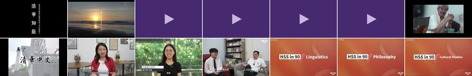
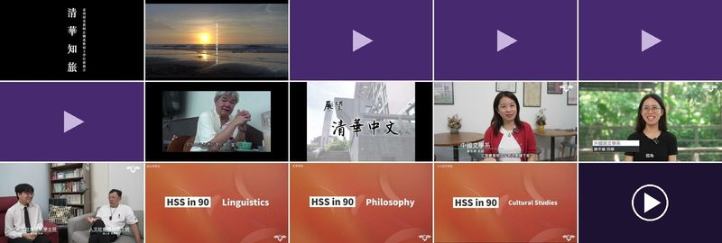
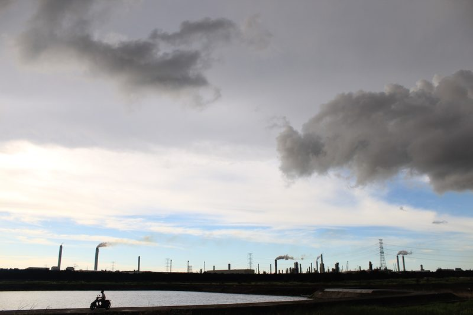

超能力補給站
在六道情境抉擇關卡中，你找到自己覺醒的超能力了嗎？
或許你發現自己擁有敏銳的「透視眼」，卻總覺得缺乏將理念落地的「改變手」；又或許你充滿了「共鳴耳」的溫柔，卻正在尋找能夠把故事精準傳達出去的「敘事筆」。面對當代社會龐大且複雜的議題，我們往往會感到自身的單薄，發現單憑一種視角或能力，似乎不足以回應這個世界的挑戰。
但請放心，沒有人天生就能具備所有的超能力。
那些看穿結構的洞察力、跨越邊界的轉譯力、以及落地實踐的方法，都是可以透過系統性的「學習」與「訓練」來獲得的。
這裡匯集了人文社會學院各系所的精彩亮點、扎實的特色課程，以及學長姐們走入社會的真實研究與實踐成果。無論你是想補足自己「缺乏的那一塊能力拼圖」，還是想將你原有的天賦打磨得更加銳利，這裡都有能與你產生化學反應的資源與解方。
在這裡，你不需要急著把自己定義成機器裡的某顆齒輪，各學科所能提供的能力也會在其中互相對話；你可以同時擁抱兩套觀察世界的方法、掌握兩套解決問題的專業，甚至更多。
若你渴望透視眼
透過歷史、社會與人類學的宏觀視野與研究技藝，學院將教你洞察結構、拆解迷思，看見社會運作的底層邏輯。這份知性辨析的力量，讓「文化」不再是定格的古董，而是看見它如何在變遷中不斷生成，讓現在的抉擇不再是唯一的終點。
若你追求共鳴耳
藉由哲學、語言學與區域研究的深刻辨析，我們陪你穿透喧囂，在差異中建立倫理的連結。這種倫理實踐能讓我們放下知識的傲慢，如其所如地理解「非我」的文化，溫柔地接住每個被忽視的靈魂。
若你修煉敘事筆
融合文學、翻譯與文化研究的轉譯能量，學院將賦予你奪回生命敘述權的力量。文化永續需要新的形式與內容，透過你的筆，模糊的歷史記憶將轉化為能夠觸動人心的動人詩篇，賦予傳統資產跨越時空的真實生命力。
若你想要改變手
在學士班與多元的跨領域實踐中，我們提供整合知識的平台，將你的憤怒與愛轉化為具體的社會影響力。當學術轉化為可持續發展的生活方式，文化便能在實踐與創新中，找到與當代社會共生共榮的道路。
SCREENING
來看看那些生硬的理論是如何化為真實的行動，來認識那些正在不同領域發光的敘事者與改變者。
中文系
外語系
語言所
歷史所
人類所
社會所
哲學所
台文所
華語文
台研教
學士班
華文所
亞際




同場加映
由下而上的田調日常
「麥寮訪調團」始於社會所研究生自發組織的「與六輕為鄰：雲林麥寮聚落型態與產業變遷訪調計畫」，在獲得當時所長吳泉源老師的鼓勵及經費支持下，於2013年1月首次前往麥寮進行田野訪調。 時至今日，麥寮訪調計畫仍持續著，師生們除了於寒暑假進行田調，學期間則透過組織「寫作工作坊」，將訪調所得轉化為報導和論文。